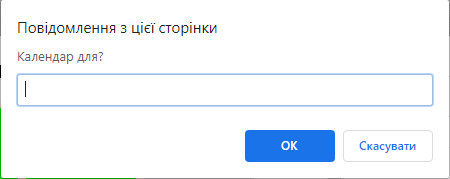
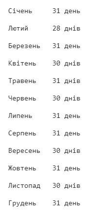

Тема 11. Завдання 1
Створіть календар окремого місяця. Виконуйте завдання по пунктам.
Пункт 1
Створіть картку з одним днем місяця.
Пункт 2
За допомогою javascript додайте правильну кількість карток для усіх днів цього місяця.
Пункт 3
Вважайте що місяць починається з понеділка. Виxідні дні повинні мати інше забарвлення.
Пункт 4
Запитайте місяць у користувача через propmt().

Пункт 5
За допомогою if та умови або (||). Виводьте правильну кількість днів. Викоритайте цю таблицю:

Пункт 6
Запитайте у користувача через propmt() номер дня з якого починається місяць.